Vocal Source Separation from Musical Mixtures
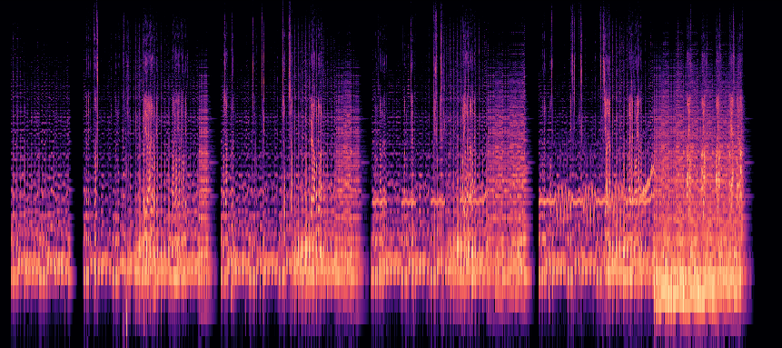
Undergrad student at BITS Pilani Hyderabad Campus | Research in AI-assisted CAD, text-to-3D, geometric deep learning, and computer vision
I'm a third-year dual-degree student at BITS Pilani Hyderabad Campus pursuing a B.E. in Computer Science and M.Sc. in Physics. My research focuses on 3D vision, multimodal learning, sequence-to-sequence modeling, and text-to-3D systems, with a passion for novel neural architectures and transformer-based models.
I have hands-on experience with PyTorch, Open3D, distributed training, and multi-GPU fine-tuning in HPC environments. I'm particularly interested in geometric deep learning, 3D representations, and computer vision applications in robotics, and I'm actively seeking research internships and ML roles to further develop my expertise in large-scale model training.
Languages
Frameworks & Platforms
Libraries & Tools
ML Specializations
Systems & Infrastructure
Models Worked With
Undergraduate Research Assistant
3D Vision Group, BITS Pilani Hyderabad Campus - -
Advisor: Dr. S.K. Aziz Ali
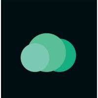
Software Intern
CloudDefense.AI - -
Location: Remote, Palo Alto, California

3D Vision Summer School
IIIT Hyderabad : Selected Participant
Vocal Source Separation from Musical Mixtures

Propositional Logic Parsing and CNF Analysis Pipeline
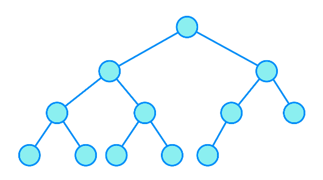
ICP Generator using Web & LinkedIn Scraping + LLMs
A2Z-10M+: Geometric Deep Learning with A-to-Z BRep Annotations for AI-Assisted CAD Modeling and Reverse Engineering
CVPR 2026 | Second Author
A large-scale dataset and benchmarking framework for geometric deep learning on CAD models with comprehensive B-Rep annotations, enabling advances in AI-assisted design and reverse engineering.
BITS Pilani, Hyderabad Campus
B.E. in Computer Science + M.Sc. in Physics - -
Dual-degree program combining engineering fundamentals with advanced physics research, focusing on 3D vision, multimodal learning, and computational methods.
Relevant Coursework:
HMR International School, Bengaluru
Class XII (CBSE) -
CMR National Public School, Bengaluru
Class X (CBSE) -
Vocal Source Separation from Musical Mixtures
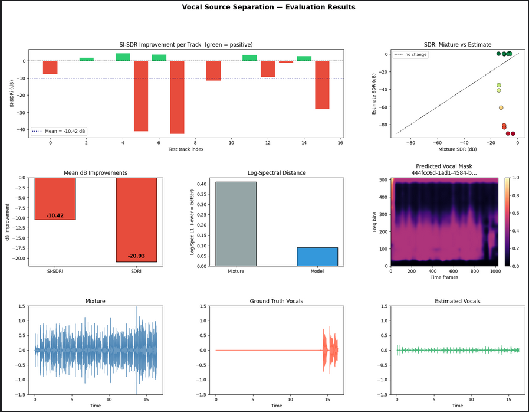
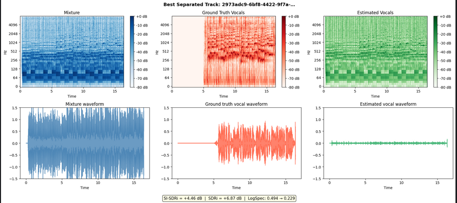
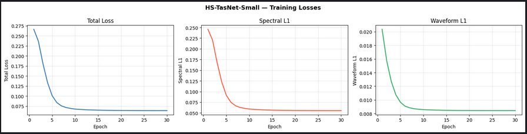
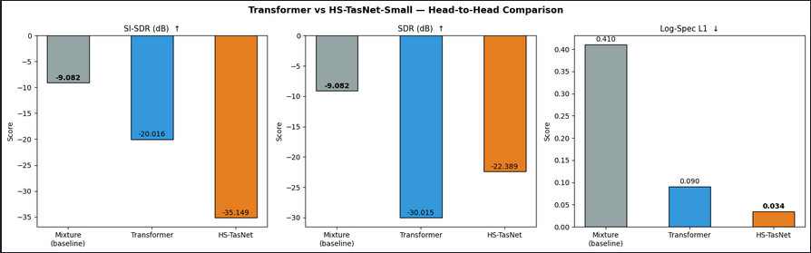
Built a vocal isolation system trained on 80 multi-stem songs from the MoisesDB dataset. Implemented and compared two architectures: a ViT-style spectrogram model with patch embeddings and transformer encoder, and a Hybrid Spectrogram-TasNet combining BiLSTM spectrogram branch with learned-filterbank waveform branch using 2x T4 GPUs on Kaggle.
Also trained SVM and Random Forest baselines on MFCC features, followed by CNN and RCNN models for instrument classification. Improved spectral reconstruction quality substantially, reducing log-spectral L1 loss from 0.41 to 0.03, while analyzing phase-reconstruction limitations of magnitude-masking approaches.
Propositional Logic Parsing and CNF Analysis Pipeline
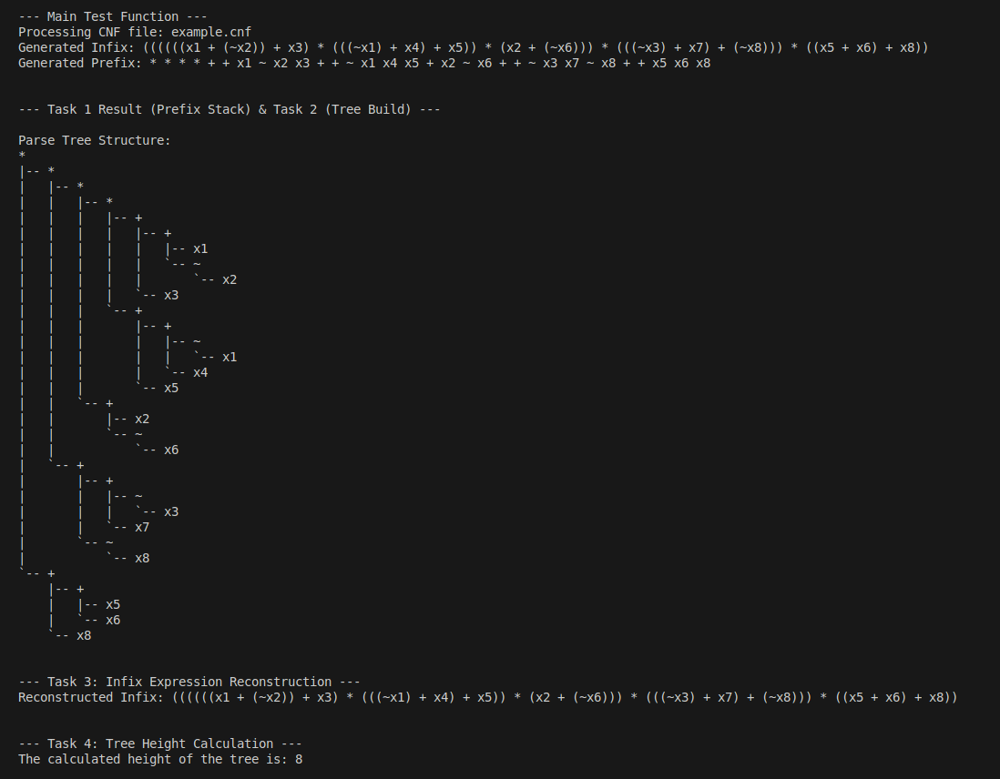
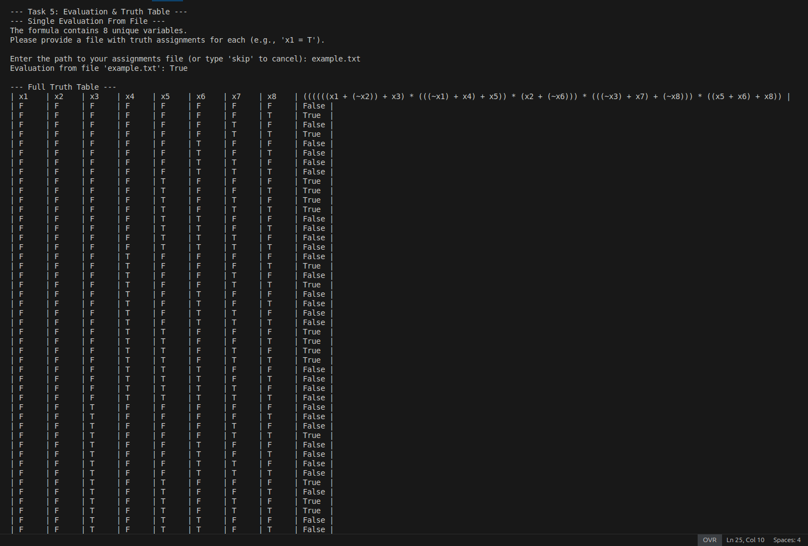
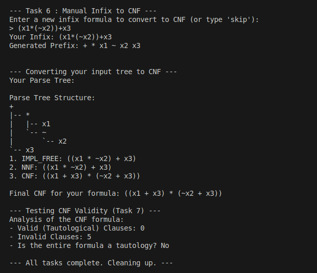
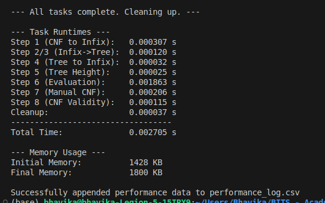
Built a C-based propositional logic pipeline for parsing, parse-tree construction, truth-table generation, and CNF transformation. Implemented infix-to-prefix parsing and stack-based tree construction using stacks, trees, and hash tables.
Analyzed time and space complexity, identifying exponential bottlenecks in truth-table generation and CNF conversion. This project strengthened understanding of formal logic, compiler design principles, and data structure optimization.
ICP Generator using Web & LinkedIn Scraping + LLMs
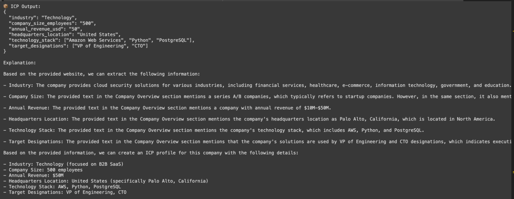
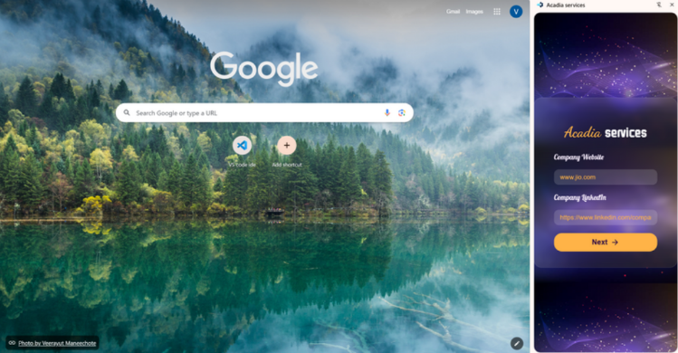
Built an automated ICP (Ideal Customer Profile) generation pipeline that scraped public company websites and LinkedIn pages and converted extracted data into structured business profiles using LLMs. Benchmarked compact LLMs including Phi-4, DeepSeek-7B, Qwen2.5, LLaMA-3-7B, and Zephyr-7B for structured JSON generation.
Deployed the final system through a Chrome extension backed by a local API, enabling seamless access to generated ICPs. This project demonstrated end-to-end LLM integration, web scraping, API design, and browser extension development.